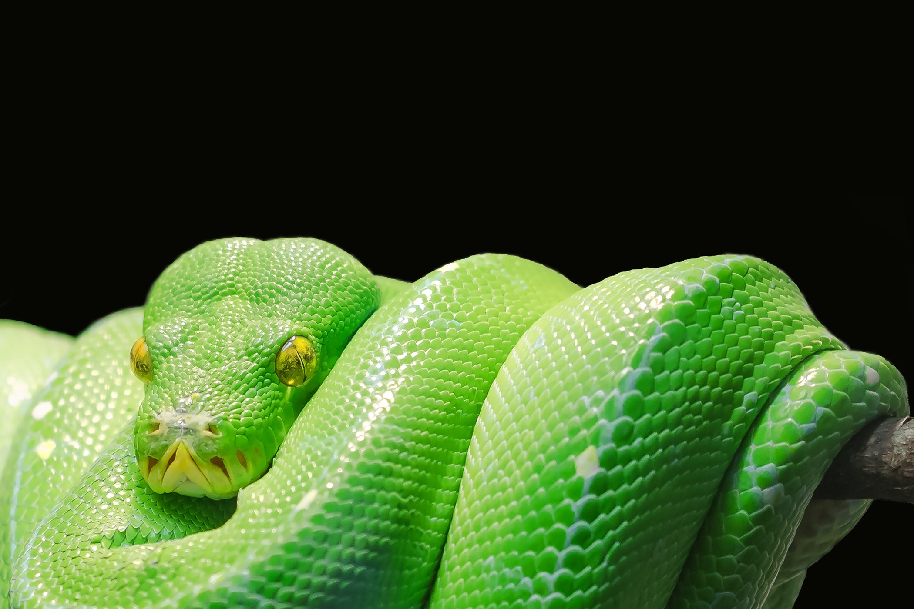

Животные
Собаки очень красивые и полезные животные. Они охраняют дом, играют с детьми, а дети играют с ними. Собаки одни из любимых домашних животных большинства людей.

Свиньи одни из самых чистоплотных животных. Многие думают, что они грязные, но на самом деле они любят грязь только, потому что это регулирует их температуру
Змеи-очень удивительные животные. Многие считают их неприятными и склизкими, но это это не так, на самом деле они достаточно приятные и очень красивые.
 Страница 2
Страница 2